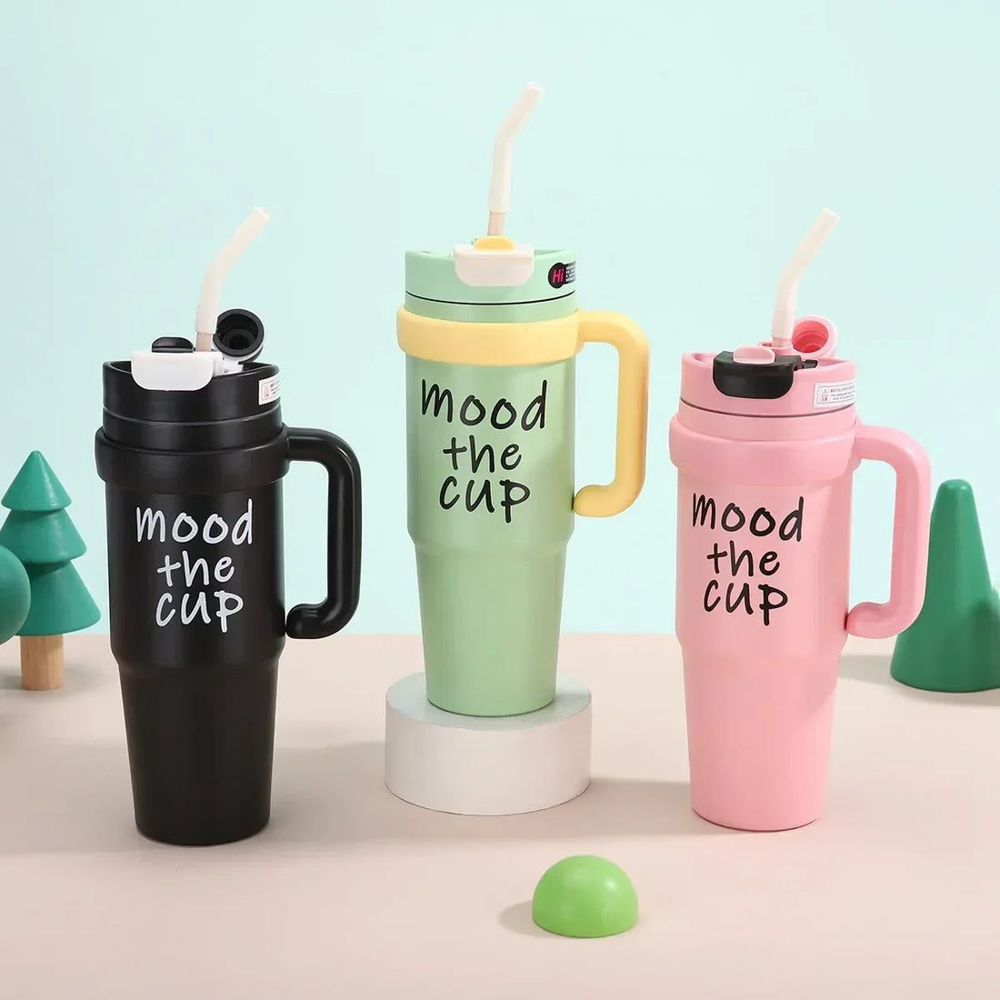
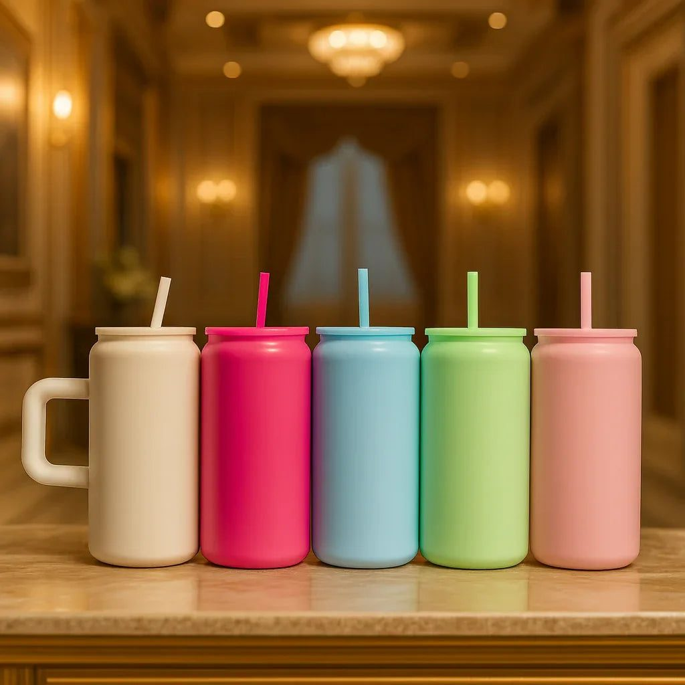

Teachers shape our children's lives. In Pakistan, where many teachers handle large classes with limited resources, a small gesture of thanks means a lot. World Teachers' Day on 5 October, the end of the academic year and the day results come out are all good moments to say thank you.
Choosing a gift can be tricky. It should be thoughtful but not extravagant, personal but appropriate. This guide offers ideas and explains why an insulated tumbler has become a popular choice.
Keep it simple and sincere
The best teacher gifts are modest. Expensive gifts can make teachers uncomfortable and may go against school policies. A handwritten card from the child often means more than anything bought. Combine a simple card with a small, useful gift, and you have something any teacher will appreciate.
Why tumblers work so well
Teachers talk all day, often in hot classrooms without air conditioning, and need to stay hydrated. Many also rely on tea to get through long days. An insulated tumbler keeps water cold or tea hot for hours, fits on a desk and goes into a bag easily. It is practical, used daily and reminds the teacher of the student every time. Stainless steel tumblers with handles are especially convenient for moving between classrooms. You can see the full selection of tumblers in different sizes and colours before choosing.

Personalising the gift
A few touches make a tumbler feel special:
- Add a small name tag or sticker with the teacher's name
- Tie a ribbon and attach a handwritten note from your child
- Fill it with a few tea bags, sachets of coffee or toffees
- Choose a colour that matches the teacher's style if you know it
Children enjoy decorating a card or a small tag themselves, which turns the gift into a project.
Other thoughtful ideas
If tumblers are not right, consider these alternatives:
- A good-quality pen set or a planner for the new year
- A small potted plant for the classroom desk
- A box of homemade cookies or a cake
- A book from the teacher's favourite genre
- A desk organiser to keep pens and papers tidy
For younger children's teachers, a group gift from the whole class, such as a nicer item everyone contributes to, can be more meaningful than many small ones.
Gifts to avoid
Avoid very personal items like perfume or clothing, unless you know the teacher well. Avoid cash, which can feel awkward and may break school rules. Be mindful of cultural and religious sensitivities, and do not give anything that could be seen as seeking favours, especially around exam time.

Thank-you notes that matter
A good note is specific. Instead of writing only thank you for everything, mention something real: how the teacher helped your child with maths, encouraged them to speak in class or stayed late to explain something. Teachers keep such notes for years. Parents can add a short line too.
Remembering all teachers
Do not forget subject teachers, Quran teachers, tuition teachers, sports coaches and support staff like the school guard or the aunties who help young children. A simple thank-you card for everyone teaches children gratitude and respect.
Budget guide for parents
A thoughtful teacher gift does not need to be expensive. A small plant or a box of homemade cookies costs a few hundred rupees. A good insulated tumbler or a pen set usually falls between one and three thousand rupees. For class group gifts, parents can each contribute a small amount through the class WhatsApp group and buy one quality item. Whatever the budget, the handwritten card from the child remains the most treasured part.
Final thoughts
Thanking a teacher is about sincerity, not price. A heartfelt note from your child, paired with a useful gift like an insulated tumbler, shows real appreciation. On Teachers' Day or at the end of the year, take a moment to recognise the people who give so much to our children.